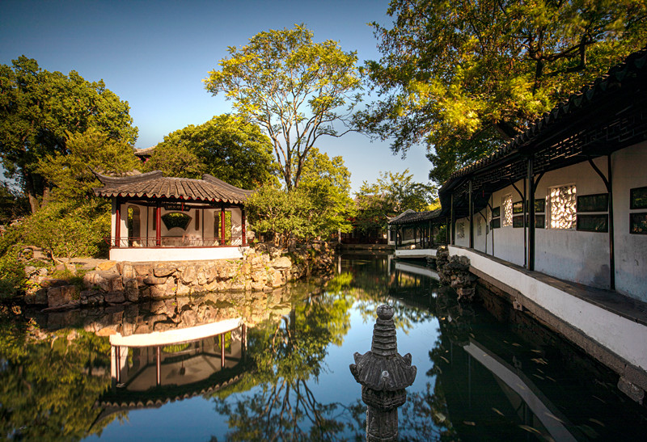

|  |
Zhuozheng Garden/The Humble Administrator's Garden
Opening hour: 7:30AM-5:30PM(3/1-11/15); 7:30AM-5PM(11.16-2.29)
The Humble Administrator's Garden was built in the early years of the Ming Dynasty (early 16th century) with a history of more than 500 years. It is a representative work of classical gardens in the South of the Yangtze River. In 1961, it was listed as one of the key cultural relics protected by The State Council. Together with Beijing Summer Palace, Chengde Summer Resort and Suzhou Lingering Garden, it was named one of the four famous gardens in China. In 1991 by the State Planning Commission, tourism bureau, ministry of Construction as a national special tourist views. In 1997, it was approved by UNESCO to be included in the World Heritage List. In 2007, it was rated as one of the first AAAAA tourist attractions by the National Tourism Administration. Located in the northeast corner of the ancient city of Suzhou (178 Northeast Street), Humble Administrator's Garden is the largest existing classical garden in Suzhou, covering an area of 78 mu (about 5.2 hectares). The whole garden is centered on water, surrounded by mountains and rivers, beautiful halls, lush flowers and trees, full of poetic and picturesque, with strong characteristics of jiangnan water town. The garden is divided into three parts: east, middle and west. The east garden is open and clear. The middle garden is the essence of the whole garden. The south of the garden is a residential area, reflecting the pattern of the typical dwellings in the South of the Yangtze River. Garden south also built suzhou Garden Museum, is the only garden museum in China. |